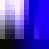
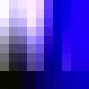
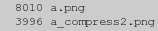
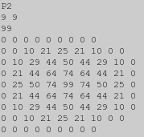
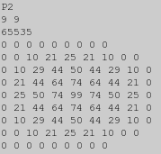
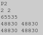

ImageMagick Examples --
 Common Image Formats
Common Image Formats
- Index
-
 ImageMagick Examples Preface and Index
ImageMagick Examples Preface and Index
-
 A Brief Summary of Common Image File Formats
A Brief Summary of Common Image File Formats
-
GIF Image File Format
-
JPEG Image File Format
-
PNG Image File Format
-
Image Profiles
- Changing Colorspace of an Image -- RGB <=> CMYK conversion
- IPTC Profiles
-
A Word about Vector Image Formats
-
Other Image File Formats
-
Postscript (PS), Encapsulated PS (EPS), PDF,
PbmPlus/NetPBM (PBM, PGM, PPM, PNM, PAM),
TIFF, BMP, ICO, RAW Digital Image (CRW,CR2,etc),
MPEG, M2V and AVI, MNG, Digital Picture Exchange (DPX),
PSD, WMF, MacroMedia Flash (SWF),
Webpage HTML Conversion, PCL Printing Format,
Kodak PhotoCD Format (PCD), Raw RGB Data,
-
Postscript (PS), Encapsulated PS (EPS), PDF,
A Brief Summary of Common Image File Formats
For an introduction to reading and writing image formats see Image File Formats. While a list of all the ImageMagick file formats are given on the IM Image Formats Page. Here is a very quick summary of the most common 'normal' image file formats, as well as their general advantages and disadvantages...- GIF
- This format is extremely common, and has been around for so long that all image handling programs understand it. But only uses a limited number of colors (a 256 color table) and only saves using 8 bit quality. However its built-in run-length encoding allows it to save images with only a few colors very efficiently. While the format has transparency, it only understands Boolean (on/off) transparency and so consequently suffers from 'aliasing' or 'jaggies'. Plain text with thin lines suffers badly when saved as a transparent GIF image. The only solution to this problem is to tie the GIF image to a specific background of the web page in which it is used. The GIF format can save multiple images to form an animation sequence, and for this purpose also saves the image canvas size and offset (page) information. Note however that negative offsets are not supported, and attempts to do so resets that offset to zero. Its best used for small images of cartoons, line drawings, and small icons, all of which have limited colors, and will allow it to compress well. Its use however should be avoided when a newer format like PNG is available.
- JPEG
- Does not handle transparency at all. The image is equivalent to using "
-alpha off" operation to remove the alpha channel, so any background transparency commonly becomes black depending on the image processing used to generate the image. This format is also 'lossy', producing edge effects on sharp lines and borders and thus should not be used for any intermediate image processing, or storage of image originals (unless they were already in this format). It is well suited to long term storage of real life photographs, but avoid it if you plan to further process the image, or the image contains large areas of solid colors. - PNG
- This format is intended to eventually replace older formats like GIF and TIFF. It is a modern format capable of handling 16 bit quality with four color channels allowing the full use of semi-transparent colors. It also includes a huge number of lossless image compression options. Its biggest disadvantage is that it is still relatively new, such that the Microsoft IE (v6) web browser does not automatically handle it correctly. However a fix is available for this problem. The format does not save canvas size information (where GIF does), but it does save the canvas offsets and even negative offsets (which GIF does not), though some web browsers have problems when a negative offset is used, so this is not recommended for a final image to be displayed in a browser. For saving intermediate 'layered' images, the ability to save negative offsets can be very important and is often much more important than its not saving canvas size information.
- MNG
- This is the multi-image format for PNG, and allows animations to movie quality levels and speed. A simple example of using MNG is wanted, so if you have one mail me. The MNG animation format appears to becomeing obsolete and has been abandoned by some web broswers such as FireFox.
- TIFF
-
This is the Image interchange format that was developed to transfer high quality images between programs before any serious image formats were available. Unfortunately, because of this beginning, the format has been modified with a haphazard array of features and compression styles and no programs understands them all. The format is now pretty well only use by "
Photoshop" on windows platforms, and this is the only source that provides any sort of standard reference for the TIFF image format. TIFF files can handle multiple images, though few applications other than IM handle multiple image TIFFs. Generally, unless the internal format of the TIFF image is kept relatively basic, there is no guarantee that a TIFF file generated by one program will be usable by another program, including IM or even "Photoshop" itself. As such I do not recommend this format period! I suggest you use some other format than TIFF (or JPEG), especially for long term storing of images. The few notes I have on this format and its problems are provided below in the Miscellaneous Formats, TIFF section. These usage notes were found in the IM mailing lists and forums, as I myself don't use or need to use TIFF. - Video Formats
-
Other movie quality animation formats generally based on using lossy compression to reduce the size (and quality) of the movie. Both formats are in a constant state of flux, improvements and security limiting features, making any form of processing difficult. At last count there was more than 200 video format 'codecs' that are in general use for one purpose or another. Because of this IM does not directly handle this format, instead it relies on other software packages, to handling the processing of the individual frames into and out of the animations. These 'delegate' programs include "
mpeg2decode", "mpeg2encode", and "mplayer". See MPEG, M2V, and AVI below).
Some system (like ubuntu) disable the use specific image file formats using a security policy. Type magick -list policy to see what policies and where they are set from are present on your system. |
GIF Image File Format
The GIF format is a very widely known image file format, as it has been around for a very very very long time (from the late 1980's). It is often picked for images which are to be displayed on web pages that involve transparency or image animation. It is also about the only format absolutely universally understood by all web browsers. Unfortunately it is not a very good format for anything but line drawings, figures, diagrams, and cartoons. That is, because it is limited to a maximum of 256 colors, one of which is usually flagged as being transparent. Flagging one specific color in the image as transparent has some drawbacks. If the color to use as transparent is badly chosen, it can result in other parts of the image being transparent when that was not intended. Care must be taken to ensure that does not happen. Further more, the transparency ability is 'Boolean', which basically means it is either fully on, or fully off. Semi-transparent colors are just not possible, and if present need to be made either transparent or opaque. That means the format can not provide any form of anti-aliasing of edges of an image, usually resulting in a bad case of the 'jaggies'. (See Anti-Aliasing) Because the "GIF" image formats color limitations causes so many problems, especially from a high quality image processing package like ImageMagick, I would like to say up front...
Avoid GIF format, if at all possible.
If you must use it, do so only as the final step.
Finally for a long time the compression algorithm used by GIF was patented. Consequently it was not available for use by many image processing programs, such as ImageMagick. Thus very old IM programs will output GIF format images un-compressed, and thus using more disk space than it should. You can fix this using a GIF batch compression program such as "If you must use it, do so only as the final step.
Gifsicle" or "InterGIF". However as the patent expired completely in mid-2004, the current release of IM has the GIF image compression re-enabled again. The image compression is also rather simple, and works best on images with large areas of solid, unchanging colors. Or on simple repeated patterns of the same set of colors, such as you get using Ordered Dithering (not the default dither in IM). Finally GIF images can save multiple images in the one file. And this is used to generate GIF Animations as understood by pretty well all web browsers, since the technique was first introduction by the very old "Netscape" browser. In Summary The GIF image file format with its limited color table, Boolean transparency, and simplistic compression (if enabled), makes it ideal for small images, such as thumbnails, and especially "cartoon-like" icons, logos, and symbols images with large areas of solid colors. Its animation abilities also make it an ideal method of generating flashy attention grabbing logos and advertisements you see all over the World Wide Web. For anything else its limitations make it a poor image file format and you may be better moving to JPEG, PNG, or a video image format for your needs.
GIF Limited Color Table
FUTURE: color reduction examples -- reference basic color dithering Ensuring that a specific color is present in the final GIF image Map color tables to color reduce. See Color Quantization.See Advanced 3-D Bullet Scripting for an example of generating multiple images over a range of colors. This technique can also be used to auto-magick your image into multiple images for many different backgrounds colors and patterns.
GIF Transparency Color
For example, here we use identify to extract the transparent color, and the color table a particular GIF image file used to represent transparency. The perl script extracts just the specific fields of interest (which can be multi-line).
|
![[IM Output]](../images/hand_point.gif)
|
||
|
![[IM Output]](hand_point.txt.gif)
#CCCCCC00') was used for this image and this color has its own separate entry in the color table. You can also see that even though this image only uses 5 colors (one transparent), the color table used is for 8 colors. that is because the GIF file format can only use a color table that is a power of 2 in size. That is the color table is always 2, 4, 8, 16, 32, 64, 128 or 256 color entries in size. As such the last 3 color table entries are not used. Actually they are just not refered to. In some cases these unused entries may not be the last three entries in the color table, and could actually contain any color value. You can also actually have duplicate color values, though IM typically removes any such duplicate color entries if it processes the image in some way. As of IM version 6.2.9-2 (and in some older versions), IM will preserve the color table, and more specifically the transparent color value, whenever it reads, processes and writes a GIF image.
|
|||
|
![[IM Output]](hand_white.txt.gif)
wheat' color pixels were replaced with a 'white' color) the transparent color used was preserved However if the final image has no transparency, the transparency color entry ('Alpha:') in the color table is completely removed.
|
![[IM Output]](hand_flatten.gif)
|
||
|
![[IM Output]](hand_flatten.txt.gif)
-transparent-color" output setting (added IM v6.2.9-2). For example...
|
![[IM Output]](hand_wheat.gif)
|
||
|
wheat' color. If you look closely you will also see that the image now has two 'wheat' or '#F5DEB3' colors in its color table. That is, one transparent wheat and one opaque wheat. As of IM version 6.2.9-2, this presents no problem. Though only one transparent color can be defined by the GIF image file format. Why would you do that? Because some very old web browsers and graphic programs do not understand GIF transparency. So this option lets you set what color the transparent areas should be in that situation. Typical choices for the transparent color are 'white' for modern browsers, OR more typically 'grey75' ('#BFBFBF'), which was the original "mosaic" web browser page color. Other popular transparent color choices are 'grey' ('#BEBEBE'), and 'silver' ('#C0C0C0') which is what the 'hand' image above used. This shows just how popular that specific area of the gray-scale color range is for the transparent color. FUTURE: add link to color selection.
Before IM v6.2.9-2, and the creation of the "-transparent-color" output setting, IM would typically save the transparency of an image as the special color 'none' (fully-transparent black), which is not particularly nice when transparency fails. |
-transparent-color" does NOT add any transparency to a GIF image, nor does it magick the specified color to become transparent. All the option does is specify what color should placed in the color table for the color index that is used representing the transparent colors in a GIF image. If you want to change a specific (exact) color to become transparent, then use the "-transparent" Color Replacement Operator.
GIF Boolean Transparency
Because the GIF format does NOT understand semi-transparent colors, and as ImageMagick by default generates semi-transparent color as part of its normal Anti-Aliasing Methods, when you save a image to this format it will often come out horrible looking. For example, here I draw a simple black circle on a transparent background. Also I will generate an enlarged view of the edge of the images, to make it clear what is happening. First I will output using the PNG format...
|
![[IM Output]](circle.png)
|
|
![[IM Output]](circle.gif)
|
GIF format has an on/off or Boolean transparency
If you look more closely at the resulting GIF, you will find that the semi-transparent pixels could have either become fully-transparent or full-opaque.
| What ImageMagick actually does with semi-transparent pixels depends on just what version of IM you are using. It was for a long time not properly defined and what a version did, often depended on the last 'bug fix' that was applied due to bug reports from users. As of v6.2.9-6 ImageMagick should by default threshold the image at a 50% level for both GIF and XPM image formats. This has become the accepted standard as used by image handlers, while still allowing you to set your own methods of dealing with the transparency problems of the GIF file format. |
Because of the GIF limitations, IM performs the following set of operations before saving to the GIF file format...
-channel A -threshold 50%
if (fully-)transparent pixels are present it then...
-quantize transparent -colors 255
otherwise if no transparent pixels present...
-colors 256The -colors quantization process automatically does nothing if less that that many colors are present in the image. Nor will it do anything if the image has a valid colormap (as assigned by "+/-map").It also does not attempt to use a common color map for multi-image GIF files. As such if the colors are very different from one frame to the next, a local color table may be added to each individual image saved into the GIF file format. Also the settings used in the above are not permanent just temporary for the image being saved. That is, if you used " -write image.gif" the settings used during the process do not effect later operations.
|
![[IM Output]](circle_threshold_mag.gif)
-threshold 50%" on the alpha channel that IM now does automatically, that is if a pixel is more than 50% transparent, it will be made fully-transparent (using the color given by the "-transparent-color" setting if defined. However you now have control of the threshold level as you like. Thresholding the alpha channel at 50% works well for most types of images. Especially those with a simple edge, but the technique breaks down rather badly, when you need to deal with large areas of semi-transparent pixels. This is what the most of the following examples for GIF handling will look at. For example suppose we want to save an image with a large fuzzy semi-transparent shadow such as this image (in PNG format)...
|
![[IM Output]](a.png)
|
-threshold" operation to control the Boolean transparency, you will be sorely disappointed.
|
![[IM Output]](a.gif) ![[IM Output]](a_threshold.gif)
|
50%', the second image was thresholded at '75%' allowing more semi-transparent pixels to become fully-opaque (or visible). If you just want to remove all the semi-transparent pixels (EG the shadow) you could try something like a "-threshold 15%", to remove just about all semi-transparent pixels.
|
![[IM Output]](a_no_shadow.gif)
|
GIFs on a solid color background
What we would really like to to somehow preserve the shading of the semi-transparent and anti-aliased pixels, and still display it nicely on the WWW. To do this we have to be a little tricky. The typical solution is to match the image to the background on which you are going to display the image on. This is simple to do, just overlay the image onto a background of the appropriate color, before you save it to the GIF format. This removes the need for any form of transparency and the whole thing becomes a non-issue. Of course the limited number of colors is still an issue, but often not a big problem.
|
GIFs on a background pattern
But what if you are using some pattern for a background, instead of a simple solid color? You could try positioning the overlay onto a copy of the background pattern so that the pattern in the resulting image matches the pattern of the web page. However that would require a lot of trial and error to get the background in the image to match up with the web page. Also you could only guarantee it to work for a particular browser, and then only that specific version of the browser. Not a good idea for a web page, so don't even bother to try. I certainly won't. Instead of trying to do a perfect match-up with the background pattern, lets just overlay it onto a color that at least matches the background we intend to use. For example lets overlay our image onto a 'typical' bubble like background pattern. But first we need to know the average color of this background. A simple way to find this color is to just scale the image down to a single pixel, then read the resulting color.
|
|
![[IM Text]](bg_color_avg.txt.gif)
txt:" output format used. Now lets set the background transparency of the image using "-flatten".
|
|
-transparent" color in the GIF output. By doing this we remove the 'squareness' of the image. Also adding a small fuzz factor improves the result and adjusts the amount of space the transparent color uses, in the same way threshold did above.
|
|
![[IM Output]](a_bg_trans.gif)
Be cautious however with the "
-fuzz" setting, as too much and you can end up with more than just the outside of your image becoming transparent!
|
|
![[IM Output]](a_bg_overfuzz.gif)
-alpha floodfill' to set the areas we want transparent.
|
|
![[IM Output]](a_bg_none.gif)
An alternative technique especially for images with a sharp anti-aliased edge is to simply add a minimum outline of the background color. See Outline or Halo Transparency.
Remove the Background Color... Trying an remove a specific background color from an existing GIF image is not easy. It is especially difficult if the overlaid image also contains the background color, as you then don't really know what is background and what isn't. The best solution is to get a copy of the same GIF overlay on two different and well known background colors. With two such images, you can recover the original overlay and all its semi-transparent pixels perfectly. See Background Removal using Two Backgrounds. If you don't have two such images, then you can not perfectly recover the images semi-transparency, but there are techniques that can do a reasonable though imperfect job. For this see the other sections of Background Removal.
GIFs for non-specific backgrounds (or Dithering the Transparency)
FUTURE: This will move into a more generalise (non-GIF specific), alpha dithering section.The biggest problem with the above is that it would only work if you happened to know exactly what color the background, or background pattern your image will be used on. If you don't know all is not lost. As you saw above, threshold does not work well for an image with a very large area of transparency, such as a fuzzy shadow. But another technique known as dithering can, and does NOT require knowledge of the background it will be used on. Basically dithering limits the transparency to on/off values, creating an effect of semi-transparency over a larger area using a pattern if pixels. In other words it fakes semi-transparency. This method was exampled in what is now known as the "Opossum Examples". Unfortunately these examples did not actually give the commands that were used to generate the example. For completeness I will attempt to demo them again here. The "
-monochrome" operator converts all colors in an image into a pure black and white "Floyd-Steinberg error correction dither". However as it converts a grey scale image into just pure back and white colors we will need to extract an alpha channel mask from the image, dither that, and return it back into the image.
|
![[IM Output]](a_dither.gif)
|
-channel" setting (unlike "-monochrome").
magick a.png -channel A -ordered-dither o2x2 a_ordered_2x2.gif magick a.png -channel A -ordered-dither o3x3 a_ordered_3x3.gif magick a.png -channel A -ordered-dither o4x4 a_ordered_4x4.gif magick a.png -channel A -ordered-dither checks a_halftone_2.gif magick a.png -channel A -ordered-dither h4x4a a_halftone_4.gif magick a.png -channel A -ordered-dither h6x6a a_halftone_6.gif magick a.png -channel A -ordered-dither h8x8a a_halftone_8.gif |
![[IM Output]](a_ordered_2x2.gif)
![[IM Output]](a_ordered_3x3.gif)
![[IM Output]](a_halftone_6.gif)
![[IM Output]](a_random_50x95.gif)
![[IM Output]](a_random_50x50.gif)
-ordered-dither" produces a pattern of transparent and opaque colors to represent the overall transparency. This however produces a very noticeable regular pattern. However if you use a shadow color that is similar too but darker than the normal background then you can make this pattern almost completely invisible. The 'checks' pattern (first image on second line) is of particular interest as it is a very simple 3 level pattern that is very clean, and neat.
The "-ordered-dither" was extended in IM v6.2.8-6 with 'half-tone' dither patterns. The operator was then completely revised for IM v6.3.0 with named dither patterns (use "-list threshold" to see the full list). You can even generate your own dithering pattern to generate other special effects. See Ordered Dithering Examples and the Ordered Dither Upgrade notes for more details.Before this redevelopment, arguments could only consist of the geometry strings ' 2x2', '3x3' and '4x4' (which will still work). However, anything else was then treated as being a "-random-threshold" argument, usually with disastrous results. Caution is required when using this option on very old versions of IM. |
-random-threshold" on the other hand produces a highly variable randomized dither that is different each time it is run. The purely random nature of the this dither algorithm however tends to produce large 'clumps' of pixels, rather than the smoother, algorithmic placed dithering generated by the "Floyd-Steinberg" "-monochrome" operator. The big advantage of "-random-threshold" however is the limit controls it provides. By making the parameters very restrictive (for example as '50x50%') you would magick -random-threshold" into a simple "-threshold" operator. By being only a little less restrictive you can randomize just the very edge of the threshold limit, (for example using '45x55%').
The "-random-threshold" argument 'PxQ', where P is the min threshold and Q is the max (the '%' symbol is required). So "5x95%" says anything below is 5% of MaxRGB is set to 0, anything above 95% is set to MaxRGB otherwise we choose a random value between 5% and 95% of MaxRGB, as the threshold level to use for that pixel. an argument of "5x95%" value is probably the best value to use in most situations. |
FUTURE: dither example with a dither color matching the light blue background of this web page.
Non-ImageMagick GIF Processing
| giftrans | Lists all the attributes and color table of GIF image. It can also set a specific color index as the transparent color without modifying the images color table ordering, or merging color indexes holding the same color (not a recommended situation). The IM "magick identify" command I have found to do a better job of listing image attributes, including the 'loop repeat limit' in the "Mosaic Application Extension" used in image animations. See also the "gif2anim" script (below), which previously used this program to extract the GIF image meta-data needed to re-create the GIF from the individual 'frames' extracted. It now only uses "magick identify", to extract this meta-data. |
| GIFsicle |
This is a general-purpose image optimizer program, whose original purpose was to re-add compression to GIF images at a time when that algorithm was still under copyright. The program can also be used to add comments, create GIF animations and also optimise such animations in the same way that the IM "-deconstruct" operator does, though with further transparency optimizations such as LZW Compression Optimization.
|
| InterGIF | A similar program to GIFsicle, designed for processing animated GIFs. However it only provides Transparency Compression Optimization. Other features however may be useful however. Mail me your views. |
| gif2anim | A shell script which takes a GIF animation file, and extracts all the individual frame images, as well as a ".anim" file containing all the IM "magick settings needed to rebuild the animation from the extracted frame images. |
| anim2gif |
The reverse of the above script, which takes a ".anim" file containing all the IM "magick settings and rebuilding a GIF animation image. This script is very useful for studying, editing, adjusting and merging GIF animation files. For basic usage see Animation List Information. Also see Appending Animations (time synced) for a practical example of its use.
|
GIF Image Offset handling
While the GIF format saves images with offsets as part of its image animation handling, it will not save a negative offset. Any attempt to save a negative offset to a GIF image will result in the offset being reset to zero. This can be a real pain when designing GIF image animations. If Internet Explorer web browser is given an GIF image whose 'page offset' places the image somewhere outside the 'page canvas size', it will ignore the page size and offset and display it as if it has no such offset. The ancient Mozilla web browser on the other hand will just display the image canvas, and apply the offsets to the image. This can result in an empty canvas being display with no image data present, which while correct, can be unexpected. Both will display the image using the page canvas size, with the appropriate page offset if the image is wholly contained on that page canvas.Related GIF Output formats
- GIF87: Output the image in the older GIF 87a format.
- If the "Mozilla" web browser sees this older format it will completely ignore the page geometry of the image, and will not use a larger 'page' frame, or use image offsets with the image. IM version 6.0.4 and earlier would normally produce a GIF89a format. But if the image was a GIF animation, and was split up into separate images using +adjoin, Im would use the GIF87a, resulting in inconsistent results when displayed in web browsers. IM after v6.0.4 will always produce a GIF 89a image format file, unless the user specifically asks for the older "
GIF87:" output format.
JPEG Image File Format
This format is about as common as the GIF format above. But where GIF is designed with small simple "cartoon-like" images in mind, JPEG is designed for large real life images with lots of different colors, and shades of colors, such as photographs. A key feature of the JPEG file format is its compression, which reduces image size while keeping the image acceptable to the human eye. This is a very complex process and beyond the scope of this discussion. For more information about this process and its effects see Jpeg Compression Introduction. And a great nitty-gritty explaination in the You Tube Video JPEG DCT, Discrete Cosine Transform (JPEG Pt2)- Computerphile Unfortunately, to compress images well, the algorithm intentionally loses information. What is saved is NOT the same image as what is in memory; the color of a particular pixel or area of an image will generally will NOT be exactly the same color that was saved. This is particularly true near the edges of objects within the image. So as a quick word of warning...
IM is a general raster image processor, for modifying images.
It will not do lossless JPEG modifications.
If you are interesting in lossless handling, see Non-IM JPEG Handling.It will not do lossless JPEG modifications.
This lossy behaviour becomes even more noticable if a JPEG image is changed so that the amount of change to the top or left boundary is not a multiple of 8. When this happens the JPEG compression 'blocks' or 'cells' will be completely different, and that can produce a large increase in the final image save size. That is, operations such as chop, trim, shave, border, frame, extent, etc.. (See Cutting and Bordering Operations that can shift the image data by a pixel offset that is not a 8. See the IM Forum discussion Cropping an image result in an unexpected increased file for more details.
Normally this lossy nature of JPEG data is not very noticeable. However it can become noticeable when you either load and save a JPEG image multiple times or use a very low quality with a diagram showing sharp color changes. However as long as you don't load or re-use JPEG images over and over (preserve and apply operations from the original source), it is still a good file format even image types it is not particularly good at handling. As an example of this lossy JPEG nature, here I generate a simple image of two gradients appended together. While the gradients provide a smooth color change that JPEG handles very well, the sharp color change between the two gradients are not handled well.
magick -size 5x10 gradient: gradient:blue-navy +append jpg_lossy.gif magick jpg_lossy.gif jpg_lossy.jpg |
magick jpg_lossy.gif -quality 100% jpg_lossy_100.jpg magick jpg_lossy.gif -quality 80% jpg_lossy_80.jpg magick jpg_lossy.gif -quality 50% jpg_lossy_50.jpg magick jpg_lossy.gif -quality 20% jpg_lossy_20.jpg magick jpg_lossy.gif -quality 5% jpg_lossy_5.jpg |
![[IM Output]](jpg_lossy_50.jpg)
![[IM Output]](jpg_lossy_20.jpg) 

100%' or maximum quality, there is still some slight color distortion. It is very hard to see, but it is present. On the other hand using a progressively lower "-quality" setting for the JPEG image makes this color distortion even larger and more noticable. Not only that it sets up a sort of 'shadowing' of the edges producing 'waves' of color changes spreading out from the sharp edges. An effect commonly known as Ringing Artefacts. However the reason for using compression is that the size of the resulting image is very dramatically smaller, at least initially. Here is a file list of the results and their size in bytes.
![[IM Text]](jpg_ls_lossy.txt.gif)
|
50%', image sizes do not get much smaller in terms of file size savings, only a much more progressively degraded image. It is a process of diminishing returns. In summary...
JPEG losses information, degrading images when saved.
Use some other format for intermediate images during processing.
Only use JPEG format, for the final image, not for further processing.
JPEG is also not good for artificial images with sharp color changes, such as line drawings, diagrams, or cartoon-like icons, text, and symbols. Such images with a low number of colors are better saved using a palette image format, such as GIF, or PNG8. A new JPEG image format, Jpeg2000, is becoming available which does allow lossless JPEG compression. However this requires the 'JasPer' library to also be installed. To use this special format, you also need to use a "Use some other format for intermediate images during processing.
Only use JPEG format, for the final image, not for further processing.
-compress jpeg2000" option or save to a JP2 file format, so IM will call the right library.
JPEG transparency - NOT
Other than compression, the other major problem that JPEG users faces is that
JPEG does not save transparency
Thus while you can overlay images onto a background color or pattern and save to JPEG, you cannot give a JPEG image a free-form border or with see-through holes. As JPEG was designed to save real world images, and not parts of images, as such transparency was not an issue it was concerned about, when the format was created. Consequently the designers never worried about including an alpha channel, or other transparency information in the file format. For example let take the PNG with transparency we used above and magick it directly to JPEG.
magick a.png a.jpg |
![[IM Output]](a.jpg)
JPEG Color Distortion (testing)
As mentioned above, the compression algorithm JPEG used is lossy. That image will be modified to allow it to compress better, reducing file space, hopefully. Exactly how much color distortion occurs depends on the quality settings use. For example let us look at how many colors are in the IM built-in "netscape:" image...
|
|
|
|
![[IM Text]](jpg_colors_def.txt.gif)
|
|
![[IM Text]](jpg_colors_100.txt.gif)
|
|
![[IM Text]](jpg_colors_lless.txt.gif)
|
|
|
|
![[IM Text]](jp2_colors_50.txt.gif)
{kind=link}
{kind=link}
{kind=link}
{kind=link}
{kind=link}
{kind=link}
{kind=link}
{kind=link}
{kind=link}
{kind=link}
{kind=link}
{kind=link}
{kind=link}
{kind=link}
{kind=link}
{kind=link}
{kind=link}
{kind=link}
Reading JPEG Control Options
- -define jpeg:size={width}x{height}
- This setting is a hint to the JPEG image library to read just enough of the input (JPEG) image file to create an image that is at least the given size (width × height) or larger. If the input image is huge, this can greatly reduce the amount of memory IM needs for the image read, since IM will then be handling a smaller image. This, in turn, can dramatically increase the speed of the complete operation. Remember this is only a hint as the size of the image wanted, you are not guaranteed to get this size, just something close-to but larger than that size. Typically you will get something that is between this size and one twice that big, while preserving the images aspect ratio. Usually after reading a JPEG image with a size hint, the image is then immediately resized to its final 'exact' size. Typically using "
-thumbnail" to strip any image profiles, as well. For example...
magick -define jpeg:size=64x64 jpeg_large.jpg jpeg_size_hint.jpg magick -define jpeg:size=128x128 jpeg_large.jpg \ -thumbnail 64x64 jpeg_thumbnail.jpgNote that this modifier causes the JPEG library to skip the reading of whole columns and rows of pixels. As such it will produce effects much like the Sampling Resize Operator, including its strong Aliasing Artefacts. Because of this is it recommended that you specify at least double the final 'resize' of the image, to avoid this problem, just as shown in the above example.
Before IM v6.5.6-0 this coder setting was extracted from the " -size" setting. This caused problems when users used "-size" for image creation but then had JPEG reading produce unexpected results. As such this was changed to be a special coder setting instead.
On older versions you may need to reset the "-size" setting using "+sizebefore reading JPEG images, or IM may not real a JPEG image in full.
Note that the Thumbnail Resize Operator also uses the same sampling technique for extrememly large-scale resizing operations to quickly reduce the size of the image before using a normal resize operation, though to 5 times rather than double the final image size. The difference in size is a matter of final image quality. - +profile '*'
- -strip
- JPEG images as saved by digital cameras, scanning software and other image processing software like "photoshop" will often add large profiles of "program comments" to JPEG images. Either of these options will remove those profiles from an image, after that image read in. The "
+profile" operator will remove all color profiles from an image, while "-strip" will remove all profiles and meta-data that the image may have. Also note that "-thumbnail" is a "-resize" option that will also so a "-strip" at the same time. See also Creating Thumbnails.- -type TrueColorMatte
- As JPEG does not save any form of transparency, when it is read in it will always be fully-opaque, and have not 'alpha' hannel in memory. This setting will force any JPEG image read in after the option to have a fully-opaque 'alpha' channel to be added to the image in memory. The better way to do this however is to use a "
-alpha set" or "-alpha set", after reading the image, as it will have less impact on the reading and writing of other image formats. See Image Type when Reading and Writing and Alpha Set for more information.
Writing JPEG Control Options
By default the "-quality" and "-sampling-factor" that was found when reading the JPEG image is used when writing back to a JPEG image. This however may not produce the same file size on the disk, and you will still always have a further loss of image quality due to reading and re-saving an JPEG image. The JPEG quantization tables are not however preserved.
- -quality {percent}
- Probably the more important option when saving JPEG images, as this controls just how much the image is compressed when save it to disk. The value is not a size percentage, just a quality value. The lower the value the smaller the image and the more image information is lost, producing more artifacts, and degrading the image.
FUTURE: VERY low quality example of a photoNOTE: a quality setting of '100%' is not guaranteed to save an image without any loss of quality, just a minimal amount of loss. (See the next option) NOTE: You cannot determine a quality to get a specific file size, except through trial-and-error. Start with a "-quality" of 75% and check the resulting file size. If it is too large, reduce the quality by 10%; if too small, increase. After you have a lower and upper bound on quality, do a binary search to find a quality that best matches your desired file size. A total of five or six trials should be sufficient.- -define jpeg:extent={size}
- As of IM v6.5.8-2 you can specify a maximum output filesize for the JPEG image. The size is specified with a suffix. For example "
400kb". It works by generating many versions of the JPEG image, doing a binary search, of the output quality "-quality" setting, until it gets as close as possible to the file size given without exceeding it. It does this by writing the image repeatably into a temporary file and once it has the appropriate quality size, it then outputs the final image to the given output filename, once. The output will thus still work fine when outputting the final image to a pipeline, or direct to network, and not just to a real file. However do not expect this process to be very fast due to I/O requirements. Perhaps 4 to 8 times slower. Mail me your results if you actually do a timing comparison.- -compress LossLess
- While a "
-quality" setting of '100%' can still produce slightly different colors (it is still 'lossy'), the "-compress LossLess" option will ask the JPEG library to save the image without any loss of data. As such re-reading the image will restore should be exactly as it was saved. WARNING: This will only work if your JPEG library has been patched for 'LossLess JPEG' encoding, but the use of the JP2 file format has replaced this so this option rarely has any real effect anymore. Also you MUST also set "-quality 100%" for this to work. While intuitively you would think that saving with 'LossLess' will automatically mean using a 100% quality, this is not the case. This is the result of tacking on an unusual patch for the JPEG image writing, which is a lossy format by definition. Of course the file generated will probably much be larger than a normal JPEG image. Also you will end up with a lossless compressed JPEG which you won't be able to read anywhere except with a similarly 'patched' JPEG library. As such 'lossless JPEG' is NOT recommended and some other format (like PNG or JP2) should be used instead.- -interlace Line
- Use a 'Progressive JPEG' style that allows you to see large jpeg images while it is still being loaded. Also see the non-IM solution for re-encoding an existing JPEG without further loss, below.
- -sampling-factor {horizontal}x{vertical}
- Adjust the sampling factor used by JPEG library for chroma down sampling. This can be set to '
2x1' for creating MPEG-2 animation files. "2x2, 1x1, 1x1" is IM's standard sub-sampling method and corresponds to 4:2:0, see Wikipedia, Chroma Sub-Sampling. However when "quality" is 90 or higher, the channels are not sub-sampled. Basically it will define whether the processing 'block' or 'cell' size is 8 pixels or 16 pixels.- -density {Xdpi}x{Ydpi}
- While density has no effect on the output pixel size of the the resulting image. The above setting however is stored in the JFIF header of the JPEG image file format. Unfortunately some programs like Photoshop will ignore this setting if a density is also present in a special photoshop specific profile ('
8BIM') stored in the image. Density is really only important when an output device is being used, such as printers or monitors, allowing these devices to display the image scaled to real world sizes. For example ensuring the photo or page you scanned is printed at the right size. For more information about density see and Image Density Meta-data and Resample Resizing.- -type TrueColor
- IM will automatically use a gray-scale internal format for images that only contain gray-scale values. This setting will override this behaviour and force IM to always produce a color JPEG image rather than gray-scale. See Image Type when Reading and Writing for more information.
- -define jpeg:optimize-coding=false
- Turn off the calculation of optimal Huffman coding tables for this image. This is on by default. It does require an extra pass over the image, to do the calculations needed, but this is minimal.
- -define jpeg:q-table={path}
- Defines a file containing custom JPEG quantization tables, in XML. An example table is typically installed in "
/etc/ImageMagick/quantization-table.xml" but is built-in to ImageMagick and thus not normally used. A number of discussions about generating tables are to be found in the Digital Image Processing Forum, with specific discussions (at time or writing) at JPEG Quantization Tables, Better JPEG quantization tables?, Stupid PET Trick qtable of one, JPEG luma quantization table. This option was added to IM v6.5.7-8.
JPEG Quality vs File Size
The final file size of a JPEG file for a given quality is indeterminate. The whole process of compression is so complex with small changes producing wildly different changes to the compression. Its a 'butterfly-effect'. Even the same source picture with the same quality, but with different versions of IM, JPEG library, or other image processing programs, you will get very wide differences in file size, and observed quality. You may as well treat the quality setting as simple 'guess' as to how much compression or visual quality should be applied to a specific image. In essence it is a practical impossibility to pre-determine the final file size for a given image and quality setting... Except by actually doing it. IM however can do 'test runs' to discover the best quality to use for a specific file size by using the special 'jpeg:extent' define. See JPEG Write Controls above. It is extremely slow, but faster than a similar DIY solution. Doing this is not recommended, and not just because it is slow. By your fixed file size method, a simple image might come out at quality 90%, but contain 50k of unnecessary data, where as a complicated image would have to drop to quality 30% and be exhibiting JPEG artifacts (or to put it less technically, it would look rubbish) due to a shortage of data for the detail present. The better idea is to find a single quality setting that produces an average file size of 100KB for a reasonable selection of your images. Even then images with not much detail in may come out at only 50k. While images with lots of intricate detail may come out at 150k, both will look acceptable. For a practical guide to the JPEG compression and quality, see Optimization of JPEG compression settings. Also see JPEG Compression, Quality and File Size for a look at the JPEG internal details. Photoshop Tip: Photoshop will add about 4 Kbytes of extra information to JPEG images to hold previews and color management info (profile '8BIM'). If you do not want that information, use the 'Save for Web' function. This tip was found in a paper on JPEG compression by Gernot Hoffmann.Related JPEG Output Formats
- PJEG: Write a Progressive load JPEG Image.
- This is not often used in these days of fast network downloads, but was very common when dial-up modems were the norm. Basically write every N lines first, then a line between them, and so on, so you can see an image even after only down downloading a small percentage of the complete image.
- JPEG2000: The latest JPEG format with new additions.
-
This format requires the 'JasPer jp2' library to be installed or you get a error..
"This format uses wavelet compression to compress images instead of the standard JPEG DCT method. This gives you much better compression ratios for the same image quality. Thus reducing disk space even more. Unfortunately it hasn't been widely adopted yet, so you can't use it for external purposes, at least until web browsers and other image viewers and editors also start making use of the format. Any images saved with this format are only readable by users with this library, and it will probably be a long time before a good percentage of uses use this library. Particularly windows users as Microsoft will probably not include it unless enough people demand it. Quicktime Tip: Quicktime uses jp2 format but it must be output at "
no encode delegate for this image format"-depth 8".
Non-ImageMagick JPEG Processing (A quick summary)
| jpegtran | Standard tool that is installed with the JPEG library. This allows you to apply various transforms to JPEG format images without decoding and re-encoding the image data, thus avoiding the JPEG data to become degraded. (see below) |
| jpegtrans | A newer version of the previous "jpegtran" program, though many of the added features (such as lossless cropping) has now been built into the distributed library version (above). |
| jhead | A more user-friendly lossless JPEG handler, especially with regards to the EXIF digital camera profile. That the handling of comments, date adjustments, thumbnail extraction, deletion or replacement, profile stripping, etc. It also attempts to ensure that other profiles are not trashed, which is something that "jpegtran" tends to do. There are also other similar programs such as "ExifTool", and "Exifer". Many JPEG to web photo-album programs also does this. |
| The JPEG lossless rotation (which all the above provide) will only work correctly for images that have a size that is divisible by 8 or 16. This is true with most (but not all) digital camera photos. If you try this with an image that is an odd size the right or bottom edge blocks (containing the partial size) will not be positioned correctly in the final image, as these block can only exist on the right or bottom edge. For an example of this see this specific discussion |
Lossless JPEG Processing
As decoding and re-encoding a JPEG image results in a degrading of image quality (unless lossless compression is used) the JPEG image library provides a number of special programs that can manipulate the image, without loss of quality. These commands will also be generally a lot faster than IM equivalents, as they do not have to do as much processing of the image. When modifying comments in JPEG images You can use the lower level JPEG library programs "rdjpgcom", "wrjpgcom" and "jpegtran". However I recommend you use "jhead" program, as it preserves any profile or other information that is also present in the image. The "jpegtran" allows you to go further and actually losslessly manipulate image data, including 90 degree rotation, cropping, and drop-in. It Even allows the creation of mixed quality JPEG images. For a demonstartion of this see JPEGhack page by Nemo Thorx. (See the notes below) However these commands are NOT recommended for general use, as they are limited to the block boundaries (8 or 16 bit) of the JPEG image. That is, to say That is, you can only crop, rotate, or drop-in at a JPEG compression cell level, not at the actual pixel level.Comments... If you are creating Montage Thumbnail Web Index Pages of your JPEG photos, and like to use the comments you add to the JPEG files, using the above programs, use a "-label '%c'" to tell montage to use the 'comment' field, before reading filename on the "magick montage" command line. You can also use that comment in a Complex Polaroid Transformation, or a Polaroid Montage or some type of image Annotation. The "jhead" program be used to add or modify comments in JPEG image files. However I found using the "edit comments" ("-ce") option to not a good way to do that as it adds an extra newline to the end of the comment. This extra newline stuffs up the use of commands ('%c' label formatting escape) in IM. The better way is to use "comment input" ("-ci") to feeding in a comment (without newlines at the end), or the "comment literal" ("-cl") options to be a much better way...
|
|
jhead" can also extract these thumbnails too...
mkdir thumbs jhead -st "thumbs/&i" *jpg |
jhead" provides, have a look at more EXIF-centric applications of the perl based, "ExifTool", an alternative compiled version "ExifTool", and a Windows GUI "Exifer", just to name a few. With the Image::ExifTool Perl module installed, this will strip out all JPEG metadata loslessly. I found the following to be equivalent to the command line method for stripping EXIF data. In case anyone is interested in the future:
use Image::ExifTool;
$exifTool = new Image::ExifTool;
$exifTool->SetNewValue('*'); # delete all...
$exifTool->WriteInfo('original_image.jpg','modified_image.jpg');
$errorMessage = $exifTool->GetValue('Error');
print $errorMessage; # (if has value an error occurred)
|
jpegtran" to insert a low quality JPG, into a high quality JPEG...
-
The solution:
- produce two versions of the same image with ImageMagick, one at the high quality 100 and the other at low quality 60 (for size reduction).
- use jpegtran to crop the q60, shaving off 8 pixels on each side
- use jpegtran to merge the q60 on top of the q100
- use jpegtran to merge to a stripe
PNG Image File Format
This is one of the newest and most modern image formats, supporting 32 bit colors including alpha channel transparency, but can also be optimised to a GIF like 8 bit index color scheme (256 color limit). As such it makes an excellent intermediate format for image processing without loss of image information.PNG compression
When used with PNG output, quality is regarded as two decimal figures. The first digit (tens) is the zlib compression level, 1-9. However if a setting of '0' is used you will get Huffman compression rather than 'zlib' compression, which is often better! Weird but true! The second digit is the PNG data encoding filtering (before it is comressed) type: 0 is none, 1 is "sub", 2 is "up", 3 is "average", 4 is "Paeth", and 5 is "adaptive". So for images with solid sequences of color a "none" filter (-quality 00) is typically better. For images of natural landscapes an "adaptive" filtering (-quality 05) is generally better.
| The PNG coder has been undergoing lots of work, and better methods of controlling the exact encoding and compression settings is typically set using the Define Operator. See Writing PNG Image Controls below for more details of the defines, or loot at the comments in the PNG coder file, " coder/png.c source code. |
-type TruecolorMatte" image reading setting, or you can save the image using the "PNG32:" format file. An external program "pngcrush" or the newer version "OptiPNG" will attempt to re-compress a specific PNG for the best possible compression available, and is recommended for images that you plan to place on a web site. Another program "pngnq" will color quantize it to a 256 color, 8bit PNG, though it is not known if this support semi-transparent colors in that format.
Better PNG Compression
One point about PNG images is that PNG image will preserve the color of fully-transparent pixels. That is, even though you can not see it transparency has color, and PNG preserves that data. This means that in many cases PNG can be made to compress better by replacing that 'invisible color' with a static solid color, rather than garbage color that may be left over from previous image processing. There are two major methods you can use for this, using Alpha Background Operator to just handle fully-transparent pixels only, or using a Fuzz Factor with Transparency type operation to also map near-semi-transparent colors to fully-transparent-black. For example, here I take the fuzzy shadowed "a.png" image we generated above and replace all pixels that are within 20% of full transparency.
magick a.png -fuzz 10% -transparent none a_compress.png |
![[IM Output]](a_compress.txt.gif)
|
![[IM Output]](a_compress.png)
magick a.png -channel A -level 20,100%,0.85 +channel \
-background black -alpha background a_compress2.png
|
|  |
magick image.jpg -thumbnail 200x90 -colors 256 \
-quality 90 -depth 8 thumbnail.png
|
PNG, Web Browsers and Transparency
The Microsoft Internet Explorer (IE version 6 and earlier) does not correctly display PNG when any sort of transparency is involved. Now while this is the most well known browser not to fully support PNG, it isn't the only one. The PNG transparency test and Another PNG test pages will let you test your browser. They also list the browsers and versions that produce the results displayed. However as IE (at least at time of writing) is probably the most common browser, you can add to your web page a number of work-arounds to the problem. For information on this look at my WWW Laboratory Page PNG with Transparency and IE, where I test and demonstrate the the "PNG in IE" solution I am using. Other solutions are to magick the PNG to either JPEG (with the right colored background), or GIF formats. These methods are discussed thoroughly for GIF Images on Backgrounds. Another solution is to set the color of all fully-transparent colors in a image before saving it to PNG. PNG will save that fully-transparent color, but be warned that just about any other IM operation will reset fully-transparent back to fully-transparent black (as transparent color is not suppose to matter at that is the way image mathematics work).
For example the standard IM examples test image uses full transparent black for any pixel that is fully-transparent. We can verify this by either turning off the alpha channel, or saving it a JPEG...
|
![[IM Text]](test.jpg)
|
Now lets save this so that all the fully transparent colors was replace with fully-transparent 'silver' color (see the Alpha Background operator)...
|
![[IM Text]](test_silver.png)
|
But if we turn off the alpha channel (by saving to JPEG that does not allow alpha) we can see that the PNG image really does use a 'silver' color for the fully-transparent pixels.
|
![[IM Text]](test_silver.jpg)
|
PNG and the Virtual Canvas
While normally PNG will NOT save virtual canvas size information, it does save virtual canvas offset information, and if present, IM will try to generate a 'canvas size' that is appropriate for that offset and image size. This can be important to remember for some image operators such as "-crop", "-trim" and "-flatten", etc., which make use of the images canvas or page size as part of its operation or results. Of course you can use the "-page" setting and "-repage" operator, to set or remove the virtual canvas size and offset. (See Page Image Attribute). For example, the second IM "magick" sees the offset that is present in this PNG image, and defines a canvas that is large enough to ensure the image is visible within the virtual canvas bounds (Added to IM v6.1.7)...
|
{kind=link}
magick" command does see some virtual canvas size information...
|
![[IM Output]](png_size_flattened.jpg)
|
| Some web browsers do not handle negative offsets very well, producing odd results (one version of firefox had this problem). Best to avoid a negative offset in images that may be used by other programs like web browsers. |
PNG Resolution, Density and Units
After some testing it seems the PNG image file format does not support a "-units" setting of 'PixelsPerInch', only 'undefined' and 'PixelsPerCentimeter'. Because of this IM converts a given density/unit setting into the appropriate values for 'PixelsPerCentimeter'. More to come on this subject.
PNG Sub-Formats
| PNG: | Default. Save image using economical format. |
| PNG8: | The PNG equivalent to GIF, including Boolean transparency and a 256 color table. |
| PNG24: | 8 bit RGB channels without an alpha channel. Special case can include boolean transparency (see below) |
| PNG32: | Force a full RGBA image format with full semi-transparency. |
| PNG48: | 16 bit RGB channels without alpha channel |
| PNG64: | 16 bit RGBA image (including semi-transparency) |
| PNG00: | Inherit PNG color and bit depth from input image. |
PNG8 was defined by PhotoShop, not the PNG group. And while it can handle multiple semi-transparent colors, as well as a fully-transparent color, IM assumes that it doesn't. This provides a way to force images to work properly with default be readable by Internet Explorer v6. The "Photoshop CS" program can read it. |
| The PNG48, PNG64 and PNG00 styles were added as of IM v6.8.2-0 |
PNG8:" format...
magick {input_image} -type Palette indexed.png
|
magick {input_image} -type GrayScale -depth 8 gray.png
|
magick {input_image} -type GrayscaleMatte gray_with_transparency.png
|
magick {input_image} -type BiLevel bitmap.png
|
|
![[IM Output]](a_png24_alpha.png)
|
Writing PNG Image Controls
To better control the writing of PNG images, Glenn Randers-Pehrson revised a number of coder "Define Global Setting" controls, for IM v6.5.2. These include...
- -quality '{level}{filter}'
- The basic compression level and filter when saving a PNG image.
-
-define png:compression-strategy=zs
-define png:compression-level=zl
-define png:compression-filter=fm
- Completely define the compression system to be used for the PNG image being written. The -quality setting will normally set the zl and fm values, but not the zs setting.
- -depth {depth}
- The general depth of the image to be generated, typically set to 8 or 16 bit.
- -define png:bit-depth={depth}
- Precisely specify the depth of the resulting PNG image file format. This overrides the normal IM "
-depth" control, but only for writing PNG images, and only when the change can be made without loss. In the case of color-mapped images, this is the depth of the color-map indices, not of the color samples. - -define png:color-type={type}
-
Precisely specify the type of the PNG file being written. Values can be either
Note that "' 0'for Greyscale, which allows for ' bit-depths' of 2, 3, 4, 8 or 16.' 2'for RGB, which allows for ' bit-depths' of 8 or 16.' 3'for Indexed, which allows for ' bit-depths' of 1, 2, 4 or 8.' 4'for Gray-Matte ' 6'for RGB-Matte -define png:color-type='2'" is specifically useful to force the image data to be stored as RGB values rather than sRGB values. However a similar effect can be achieved using "-set colorspace sRGB" on a linear RGB image. Howvever, do not expact that programs will honor this linear colorspace when reading. This includes ImageMagick. - -profile PNG-chunk-{x}:{file}
-
Add a raw PNG profile at location {x} from {file}. The first 4 bytes of {file} contains the chunk name, followed by a colon ':' character, and then the chunk data. The {x} can be 'b' to place profile before the PLTE, 'm' between the PLTE and IDAT, or a 'e' for after the IDAT. If you want to write multiple chunks of the same type, then add a short unique string after the {x} to prevent subsequent profiles from overwriting the preceding ones . For example..
-profile PNG-chunk-b01:file01 -profile PNG-chunk-b02:file02
-
+set date:create
+set date:modify
-
These are image 'properities' which are created by ImageMagick whenever it reads a file. They contain (respectively) the image files create time (actually permission/owner/move change time) and last file modification time. Unfortunatally PNG image file formats like to write such image data with the PNG image file format, and if this data is different, then the file generated will also be different, even if nothing else has changed.
The "
magick logo: logo.jpg magick logo.jpg logo1.png sleep 2; touch logo.jpg # change the JPG file timestamp magick logo.jpg logo2.png diff -s logo1.png logo2.png magick compare -metric RMSE logo1.png logo2.png null:diff' in the above will return the message"Even though the "Binary files logo1.png and logo2.png differ"magick compare" returned "0 (0)" which says the images have exactly the same image data. Note that as IM overwrites these properities with the times of the PNG file it just read, you can't see the actual values of these properities recorded in the PNG using "magick identify". The solution is to save PNG images without any 'time stamps'.This time "magick logo: logo.jpg magick logo.jpg +set date:create +set date:modify logo1.png sleep 2; touch logo.jpg magick logo.jpg +set date:create +set date:modify logo2.png diff -s logo1.png logo2.png
diff" reported..."ASIDE: you can also use other UNIX programs such as "Files logo1.png and logo2.png are identical"cmp", "md5sum", or "sha1sum" to compare binary image files. The latter two programs is not guranteed, but they are practically impossible to fool, and are faster for comparing more than two files (using the checksum) Thanks to some additions by GlennRP, the PNG developer you can now also use "-define png:exclude-chunk=date" to tell the PNG coder not to write date-related text chunks.
Non-ImageMagick PNG Processing
There are quite a number of helper applications for PNG, that could be useful adjuncts for generating a final PNG image file.| pngtrans | PNG information stored with an image |
| pngcrush | Tries to find the best compression of a PNG by attempting to compress the image using all logical PNG compression available, before making a final choice, for each individual image. This of course can take some time on each image. |
| OptiPNG | A newer PNG compression optimizer. |
| pngquant | Lossy PNG optimizer, reducing a PNG image down to an 8 bit color palette with dithering. It will build indexed-color PNG's with alpha transparency colors conveyed in the tRNS chunk. |
| pngnq | A newer lossy PNG quantizer, to generate 8 bit color table PNG images. Also forces the use of a color palette. |
| pngout | A Windows platform PNG optimizer (with optional GUI) that uses a ZIP compressor that is optimized for space rather than speed (also on the page linked above). |
Image Profiles
Handling profiles photo quality images is important, However from what I can tell this is a very magical art, and not simple matter. Not all formats use profiles, but most modern formats do. This includes JPEG, PNG, TIFF, and (as of IM v6.3.4-1) GIF. If fact the problem is exacerbated by the fact that many programs do not even understand or look for color profiles in images. Alan Gibson, aka Snibgo, put together a summary of how various web browsers handle various Color Profiles, on his own Snibgo, ImageMagick Profiles page. This is worth a look. To list what profiles are present in an image use...
magick identify -verbose image.tif | grep 'Profile-.*bytes' |
-
EXIF Digital Camera Meta-Data ICC Image Color Space Profile ICM Microsoft Color Management (like ICC) IPTC Image and Author Info 8BIM Photoshop Meta-data profile. Including data on: Clip Paths... What else? XMP Adobe's Extensible Metadata Platform (XMP) (See adobe page)
magick -define jpeg:size=64x64 image.jpg iptc:profile.iptc magick -define jpeg:size=64x64 image.jpg xmp:profile.xmp |
-define" option in the above is used as a 'hint' to the JPEG library to reduce the amount of actual image data it reads into memory and then save a lot of processing of the data you don't actually intend to use. You can also insert or re-insert an arbitrary profile as a 'blob' or binary string containing whatever information you like.
-profile 'profile_name:data_file' |
data_file" is added 'as is' to the image as the profile profile_name. IM or any other application will ignore such profiles, unless it specifically knows about it.
Color Profile Basics
First a quick word...
Color Management is for Wimps -- Don't Play with them
Messing with profiles generally makes things worse
So if the colors look good... Leave it alone. An user fhoech in the IM Forums, (who has since disappeared) has quite a number of times posted the following basic introduction in using color profiles to change the color space used by images... The RGB, sRGB and CMYK are not colorspaces, they are color systems (which IM controls using the "Messing with profiles generally makes things worse
-colorspace" operator). There is no single RGB or CMYK colorspace, but a literally infinite amount of different colorspaces are possible in each color system. You need ICC (or ICM) profiles which accurately characterize the colors in your images. Normally, the ICC profile that describes an image should be embedded in the image itself, otherwise, you have to use a 'best guess' attempt which is only a workaround: Open the image in an ICC-capable image editor and assign different ICC profiles (do not convert!) until you find one that looks OK with your image (your monitor must be calibrated so you actually get a good preview of the colors). Then, save the image with the profile embedded. As to why you need two profiles: The source profile describes the colors in your image as they are now. The destination profile describes the colors in the output image after conversion. Also, you should take great care when converting to a given destination profile: If, for example, you use a profile that describes offset printing on uncoated stock but intend to use the images for printing on coated paper, you will of course not get any good results. The output profile needs to be an accurate representation of your intended output condition. When converting from a subtractive into an additive color-space (or visa-versa) without using the correct profile (for both steps of conversion) you won't get 'correct' colors or brightness in most cases, although you may be lucky and hit the mark 'by accident'. You can download color profiles from International Color Consortium.
Changing Colorspace via Profiles
While you can just simple magick color spaces directly like this...
|
-profile" operator. Raf Lenaerts pointed out the following rules in using the "-profile" operator within ImageMagick...
- If there is no embedded profile then the first "
-profile" is the input profile. A second "-profile" then defines the output profile. - If there is an embedded profile then a single of "
-profile" operator will immediately define the output profile.
- The "
-profile" must be placed between the input and output file.
This is actually standard IM Command Line Processing Practice. - Use "
+profile" with 'icm' to remove any icc-profile present. - The first "
-profile" then given, is the input profile. - The second "
-profile" given, is the output profile.
-profile" operations: remove, input, and output profile options. For Example, If the input image already has a color profile then only one is needed.
|
|
|
|
Color Profile Modification
The images you want to magick should all have ICC profiles embedded. As such to magick your images with same a CMYK ICC profile...
|
-black-point-compensation" along with "-intent relative" to get a result that is somewhat nearer to what one might expect.
|
Both "-black-point-compensation" and "-intent" settings need to be specified before the "-profile" operation for it to be effective. |
The "-black-point-compensation" option was added to IM v6.2.7-0. |
EXIF InterColorProfile
On top of the above Color Profile handling, many Digital Cameras, save color profile information in the EXIF profile attribute 'InterColorProfile'. This attribute is meant to be "assumed in the event of no colour profile being embedded", according to the document, "Colour Management and Adobe PhotoShop 7".
IPTC Profiles
The IPTC profile is used in images to store identification attributes of the image, such as caption, credit, author, keywords, etc. If you want to add an IPTC profile to an image, you need a single -profile:
|
|
|
|
|
XMP Profiles
Extract a XMP profile from a TIF image...
|
A word about Vector Image formats
Their is more than one style of image storage in the world...| Raster | Images which are stored and processed using arrays of colored pixels. Raster image formats include GIF, PNG, JPEG, TIFF, and so on. Images can consist of multiple arrays (channels) representing different colors, and can have multiple images, layers, or frames (depending on usage) in the one image file format file. |
| Vector | Images are defined in terms of lines, thicknesses, tiles, gradients, and larger compound objects. Formats include SVG, Postscript, PDF, FIG, DXF, WMF, and even TTF fonts. It allows images to be resized, and even greatly enlarged without loss of quality. Also while editing such formats, you can generally move whole objects around without destroying what is underneath (object layering). |
| Fractal | Images are a special rare case, used to achieve extreme compression of complex images, such as old paintings. However the only usage I know about is in a very expensive commercial product. Outside that usage it is also used for complex mathematical objects such as Mandelbrot and Julia sets, and in generating randomized splashes of color in screen savers (IFS). It is very rarely seen. |
Avoid using ImageMagick for 'Vector Image' to 'Vector Image' conversions
EG: converting between formats like: PDF, PS, SVG
EG: converting between formats like: PDF, PS, SVG
In other words, use the right tool for the right job. And for this situation, ImageMagick is not the right tool.
That is, not to say IM can't be used to do such a conversion. After all most printers and monitors actually rasterize the image themselves for the actual printing onto a sheet of paper. The difference is that the printer knows what resolution it needs for the hardware it is using. ImageMagick does not. For examples of converting vector images to rasters (and improving such conversions), see the example Postscript/PDF pre-formatted Text and Graphics Input, and for SVG and user generated vector images see SVG Image Handling. You may also find the information on Font Size, Resolution and Pointsize useful, particularly with regard to the effect of "-density" on drawn text fonts.
Non-IM Alternatives
If you really do need to do general conversion between vector formats, the program UniConvertor, Sk1 Project (usually available as a standard linux package) and the VectorSection can be used to magick vector-to-vector without actually rasterizing the images. For general conversion of Postscript to other vector formats, look at "pstoedit", which is typically available in your systems extra package repositories. Also look at "epstopdf" which is part of the Comprehensive TeX Network (CTAN). TeX and LaTeX are UNIX documentation (book and scientific article) text processing system. It has lots of tools to do with Postscript and PDF formats. For SVG to PDF conversion, Wolfgang Hugemann <Auto@hugemann.de> suggests that the easiest vector to vector conversion was to display the SVG in a browser (Firefox) and the print it using a PDF printer driver. Though the "Uniconvertor" could be used too.
Other Image File Formats
There are of course a huge number of other image file formats that IM can use and understand, however using many of these less 'common' formats are specialized for some specific purpose, and often require some tweaking or other options to get them to perform the way you want them to perform. I do not recommend these file formats, and generally I myself don't used them. However I do try to log various notes, techniques, and options that have been reported on the IM mail list, or IM forum, so others may also use the information gleaned.Many of the notes are in a raw, unprocessed form, and I am willing to accept further contributions, ore re-writes to the notes below.Postscript (PS, EPS) and Adobe PDF
For basic handling see Postscript Text Handling and the warning about Vector Image formats. The major problem with Postscript and its related formats (like PDF) is that it is a complex page formatting language. That is, the format is a program and not really an image format! That means IM is forced to rely on another external program (or delegate) to 'run' the program and return the generated image.Encapsulated Postscript (EPS)
Encapsulated Postscript is actually exactly the same as normal postscript (a vector image format) except it is a single page image, and a "Bounding Box' entry is present to define the exact area the image covers. The format was designed to to allow other programs to move and scale the image when inserting the postscript it defines into other postscript documents. IM handles it in basically the same way as postscript. (See above).magick image.jpg -compress none eps2:image.epsUse "EPS2:" or "EPS3:" to create JPEG compressed EPS files: Note: Adding profiles to EPS images are on the 'to do' list but is currently not supported.
Postscript/PDF Input
As this format is a vector image format it is effected by settings such as "-page", and "-density". Examples of reading Postscript (which is the same for EPS and PDF format) are provided in Postscript Formatted Text, and you should read this first. However the reading of these formats is very complicated, as they are full computer languages designed specifically to generate a printed page on high quality laser printers. This is well beyond the scope of ImageMagick, and so it relies on a specialized delegate program known as "ghostscript" to read, and convert Postscript and PDF pages to a raster image. One point. As IM uses Ghostscript to rasterize a postscript file at a specific resolution, any raster images that are in the postscript file will often be blurred, or distorted, unless the exact density for that raster image is known. This also assumes that the postscript program itself does not rotate or otherwise manipulate the raster image. In fact, multiple delegates are present and selected by IM depending on the situation. For example the 'ps:color' (using the 'bmpsep8' ghostscript device) verses 'ps:alpha' (using 'pngalpha') is selected depending on if "-channel RGBA" had been set or not. The 'ps:color' delegate is used rather than 'ps:alpha' by default because the 'pngalpha' ghostscript device only supports an one page/one image and PDF's generally are multi-page. Use "-channel RGBA" before reading the image to select the 'pngalpha' delegate method. If all you want is the number of pages, using ghostscript can be a lot faster.
gs -q -sPDFname=document.pdf pdfpagecount.ps %%Pages: 96 |
Special ImageMagick PDF Reading options
Special options for PDF handling...-units PixelsPerInch- Should be set when handling PDF documents (reading or creation of). I am not sure what this does but reports indicate it should be set for correct working.
-define pdf:use-cropbox=true- Use a 'cropbox rather than the default 'mediabox' as per Adobe generated PDF files. (Basically adds a "
-dUseCropBox" to the ghostscript conversion from PDF images. NOTE: This works if your PDF only has one page, but if it is a multiple paged PDF, it won't crop correctly. -define pdf:use-trimbox=true- Use a 'trimbox rather than the default 'mediabox' as per Adobe generated PDF files.
Modifying the Input Delegate
Modifying the system delegate is dangerous and a mistake could render IM unable to read postscript/PDF files. You also may need administration privileges, as you cannot replace a system defined delegate with a personal delegate, due to security ('hacker') measures. See Delegates and Coders for Image Formats for more info on the delegate XML syntax and meaning, and creating personal input/output delegates. On the forum topic Convert EPS to JPG Unreliable, it was suggested that you edit your system "delegates.xml" and replace "-sDEVICE=bmpsep8" to "-sDEVICE=bmp16". Other users have found that changing this to "-sDEVICE=pnmraw", also works better. I have not tried this myself, so can provide no guarantees about this, or what versions of Ghostscript this applies to. If you have any further info, please let me know. If you have a CMYK postscript or PDF file then the page Blog of John details how you can modify the delegate entry (Add a "-dUseCIEColor" ghostscript option) so ghostscript convert handles this this of postscript. Another possibility is to create a personal "Delegate which would invoke pdftoppm. Say the tag is called "pdfalt" which invokes the program "pdftoppm" or even "pdfimage" from the "xpdf" package. Then your stream would look something like this:
|
pstoedit" which can convert a postscript file to other vector formats, or passes the postscript into the ImageMagick API, to magick it to bitmap. I have not experiment or tested this, and would like some feedback.
PDF Raster Image Extraction
The rendering of any PDF pages to a specific size or 'density' is at the heart of the vector graphics using by PDF. It works great for text, or line drawings. But this also means that any raster image (pixel array) within the PDF has to be resized. But resizing is a 'lossy' operation, resulting in some image degrading, unless you use the original density of that raster image, which can vary from image to image within the PDF! It is thus advantageous to be able to extract the raster images from a PDF without any 'density' reference. You can extract the raster images directly using "pdfimages" program, which is part of either the poppler-utils or the "xpdf-utils software packages. These software packages also contain many other tools that you can find useful for PDF processing. See Poppler for Windows and Xpdf Reader. You may also like to look at the "mutool" from the package "MuPDF" by the same people that look after GhostScript. An online tool to extract text and images is Sumnotes (commercial with limited free trial). At a lower level Wolfgang Hugemann says you can extract any image contained by a PDF (especially from PDF's generated by scanners). Basically by extracting any byte sequence between "stream" and "endstream", and saving as a separate file.
PDF Text Extraction
You can use the GhostScript program "ps2ascii" or "pstotext". Or as an alternative that does both text and images, have a look at "pdftohtml" has an XML output that Ross Presser reports is "pretty good at reassembling paragraphs.". Also the "pdftk" program can 'uncompress' a PDF so it can be edited directly, and to 'repair' corrupt PDF's.
Postscript/PDF Output Options
The following settings are known to effect the output of Postscript, Encapsulated Postscript, and PDF image formats: "-page", "-gravity", "-compress", "-density", By default no compression is used on PDF image output, so PDF files can often be a lot bigger than necessary. The following table equated the IM compression modes with the resulting Postscript compression mode used.
PS/PDF Compression Meanings
Recommended compressions for PDF is Zip (Deflate Compression) or Group4 (Fax) compression.
| Compression | image '/Filter [ ... ]' setting |
|---|---|
"-compress none" |
'/ASCII85Decode' |
"-compress zip" |
'/FlateDecode' |
"-compress jpeg" |
'/DCTDecode' |
"-compress lzw" |
'/LZWDecode' |
"-alpha off -monochrome -compress fax" |
'/CCITTFaxDecode' |
"+compress"" -compress rle"any thing else |
'/RunLengthDecode' |
|
Postscript/PDF Output Alternatives
Remember that PDF is a vector image (document) format, and IM is a raster image processor. This means that any PDF document IM creates will basically consist of a single raster image per page. The images output in the PDF document will be fixed at a specific resolution (or pixel density), which can cause pixel distortion issues when viewed or printed at some other resolution. Also for text documents, using a raster image is wasteful, as plain text with fonts and formatting meta-data will always be a lot smaller and render better than a scanned raster image of the text. Because of this, other PDF creation programs may be better suited to your needs. This will let you keep images as images, and text and text, allowing you position the text and images together in a nicer more logical way, as well as insert text, and overlay arrows or connecting lines, in a more logical fashion. For example I suggest you look at the support programs provided by the TeX and LaTeX system. See Comprehensive TeX Network (CTAN). Another tool set is Multivalent Document Tools. Of course such programs are harder to automate, however I have in the past use the simple FIG vector graphic file format (see Xfig) to generate Postscript and PDF documents with text and graphics placed in an automatic way. Image to PDF convertors... The tool sam2p which is specialized in converting images to PDF files. So does all the preprocessing with ImageMagick and then making the final conversation using "sam2p". It even brings a small script to adjust the result to an A4 paper. From sam2p README:
| Q58) | Can sam2p generate a PDF which is scaled proportionally (i.e. keeping the aspect ratio) to a specified page size, and centered on the page? |
| A58) |
No, but the Perl script sam2p_pdf_scale.pl bundled with sam2p can post-process the file created by sam2p. For example, to scale and center a PDF on an A4 paper, do:
|
You can also use a JAVA toolkit to merge IM generated images into a PDF producing a better PDF than a simpler one that IM will generate...#!/usr/bin/perl # Script pdf-combiner.pl use strict; use warnings; use PDF::Reuse; prFile('combo.pdf'); # Output. for (qw/a b c d/) # Inputs. { prImage("result_$_.pdf"); prPage(); } prEnd();
Another user on IM Discussion Forums also suggested using PDFjam to merge multiple PDF pages together.
PbmPlus / NetPBM Image File Format: PBM PGM PPM PNM PAM
The PbmPlus or "NetPBM" image manipulation filters (unix command line). These image formats come in a variety of styles "PBM" (bitmap), "PGM" (grayscale), "PPM" (color), "PFM" (floating point, for HDRI), "PAM" (arbitrary format), and "PNM" (any NetPBM format). Each of these (except "PAM" and "PFM") can also be either in a 'raw' binary form (the default when writing by either IM or NetPBM) , or as plain ASCII text format, (set using "-compress None"). IM can of course read any of them. The format should be regarded as using "linear-RGB" colorspace only, and NOT using "sRGB" as most other image file formats. However a depth of 16 should be used when using "linear-RGB" so caution is recommended to avoid heavy round off errors with depth 8 images. The NetPBM formats typically saves one image per file. However IM, and many other NetPBM utilities will read and write files with multiple images simply concatinated together. As such when writing images it may be a good idea to set the appropriate "-/+adjoin" setting when writing files. (See Writing Multiple Image Sequences for details). The PPM file format is actually especially important to ImageMagick as it is the communication format used during the conversion of Postscript and PDF images via the "ghostscript" delegate. It is also a major format for video image processing such as from the "ffmpeg" command. Any 'quality' or value range can be used on input (up to 16 bit or 65535 'depth'). For example, here is a highly unusual value range of 5, to generate a 'step gradient'. I know of no other image format that allows you to use such an odd-ball quality range.
|
|
PbmPlus/NetPBM vs ASCII Data Format
Its ASCII output is probably the cleanest method of extracting the color values from a specific image, which again makes it idealy suitable for script and simple image processing.
|
![[IM Text]](pgm_random_values.pgm.gif)
|
tr" text utility to replace and compress multiple commas and spaces to single newline, will place all values one value per line, making it easier for a script to process. Also with IM you can only specify 'depth' of 8 or 16 for the output quality for PGM and PPM. While the PbmPlus formats allows the use of any 'maxval' for its values, even one that is not a power of two! It does have a hard limit of 16 bit depth (maxval 65535). A finer control of the actual 'maxval' of the NetPBM image is currently not possible, though could be added via a special coder setting in the future. (if requested). Here is another example outputing a 9x9 array of grayscale values from 0 to 255, extracted from the rose built-in image. I used "pnmtopnm -plain" so we get a newline at the end of each pixel row.
|
![[IM Text]](pgm_array.pgm.gif)
|
pnmnoraw" and "pnmtoplainpnm", to do the same thing as "pnmtopnm -plain". Check your NetPBM packages man page, as the developers can't seem to make up their minds as to how it should be done. Any of these PbmPlus programs will output a newline at the end of 'image row', which the ImageMagick coder does not do. This can make image processing in scripts a lot easier. Here is an example of outputing a very small ASCII PBM bitmap.
|
![[IM Text]](pbm_array.pbm.gif)
|
0' (background) and black='1' (foreground). This is a standard for bitmaps formats like XBM and PBM, and ImageMagick understands this convention. If this is not desirable Negate the image, or use Level Images by Color to set the desired colors of the bitmap image.
PbmPlus/NetPBM Depth Control
Sometimes you want more control of the depth of PGM and PPM images, for example to use a percentile range of values from 0 to 99. One method is to use the NetPBM program "pamdepth", which can magick images to any range (up to internal limits of 65335). Here for example is an image array of values but using a 0 to 99 range of output values.
|
|  |
|
|  |
+depth" in the above command is vital to set the image file depth to the same as the IM quality level. All that is needed is to reset (or ignore) the third line to a value of '99', and optionally compress the image back to a 'raw' binary NetPBM image format. However because PbmPlus/NetPBM has a maximum depth of 65535 (16 bit) this would only work for IM Q8 or Q16 versions.
PbmPlus/NetPBM Comments
IM will read, write, and preserve 'comment' lines in the header of the PbmPlus/NetPBM file format. For example...
|
![[IM Text]](pgm_comment.pgm.gif)
|
|
|  |
PbmPlus/NetPBM vs ImageMagick
The PbmPlus/NetPBM image processing suite was once a rival of ImageMagick for command-line image processing, but uses a completely different (more low level) pipeline filtering philosophy, for image handling and processing. This makes it easy to use in shell scripts, but more difficult to use for general or very complex image processing. It also means the image is converted to and from the image file format a lot more frequently, and generally requires the use of many temporary files. PbmPlus/NetPBM images do not generally deal with Transparency (though the newer PAM format does), and does not provide a general way of passing image meta-data with the image data. All the PbmPlus/NetPBM formats (like the ImageMagick internal format, see MIFF Image Streaming) can handle a stream of multiple images, simply by concatenating or appending the images together, one after the other. This makes it very well suited for pipelined, multi-image streaming, methods of image processing, such as for video processing. However be warned that some PbmPlus/NetPBM programs only deal with single images and will not handle a stream of multiple images. However as it is more low-level, and pre-dates ImageMagick, it is often selected for raw image outputs such as video image output and handling. PbmPlus images is also more often used for scientific data, and as such images are typically stored as 'linear-RGB' colorspace rather than the more common non-linear 'sRGB' colorspace. Caution is advised. Both packages can co-exist, and I have been known to use a PbmPlus/NetPBM implementation for some things, instead of ImageMagick. Typically when using a specific low level image processing, or scripting using arrays of values stored in an image form. The two packages work together well, and recommend both be installed and used for serious image work.| I was actually the one to make the vital 1995 patch release of NetPBM, during a time when little work was being done on that software. Because of this I have a good understanding of the PbmPlus software and its simple image file format. Since then it has been redeveloped a number of times by different people, and finally seems to have become a proper open source project. The various programs seem to be maturing and start to work together better. However its main problems: an of lack of meta-data and complexity; remain. But its simplicity as a file format is its biggest advantage, making it ideal for very low level image and data manipulation. |
TIFF
The TIFF format is the propriety format for PhotoShop. However it is so
bloated with features, and has been modified by just about every application
that has cared to use it, that no program, not even photoshop can handle ALL
its variations. Photoshop however has the best chance at reading it.
I would steer clear of the TIFF image file format unless you are
specifically working with photoshop, or the application accepts no other,
better defined, image file format.
I don't use the TIFF image file format, or Photoshop. If you use this format
with IM extensively, perhaps you would like to submit your findings to me,
to include here. That way you can help your fellow TIFF users.
Whether a specific software package can read a TIFF, all you can do is try
it and see. That is, the problem with this format.
TIFF and Density (resolution) in photoshop...
See Photoshop and Density
for the details and solutions to this problem
JPEG to TIFF conversion...
magick image.jpg image.tif
This will either save the image inside the TIFF file using JPEG compression
(which was inherited from the JPEG input. Or it will error such as...
Error: "JPEG compression support not configured"
This is caused by the TIFF library not including JPEG compression support.
Either way THIS IS BAD.
You can get around this problem by changing the setting to use a different
compression algorithm:
magick image.jpg -compress zip image.tif
magick image.jpg -compress lzw image.tif
magick image.jpg +compress image.tif
WARNING: -compress Group4 with a TIFF works, but ONLY if you remove all
transparent and semi-transparent pixels from the image. Typically you can
make sure this is done the same way as JPEG images above, using
-background {color} -alpha remove
See Removing Transparency from Images
just before the final save (the first only works for single images).
TIFF (and MIFF) floating point precision files (Add to IM v6.2.6-5)...
This is especially good for HDRI image processing (which uses floating point
inside IM itself)
For single precision (float) set...
-depth 32 -define quantum:format=floating-point
For do8uble precision (doubles) set...
-depth 64 -define quantum:format=floating-point
14 bit TIFF images...
magick logo: -sharpen 0x1 -depth 14 logo.tif
tiffinfo logo.tif
Image Width: 640 Image Length: 480
Resolution: 72, 72 (unitless)
Bits/Sample: 14
Compression Scheme: LZW
Photometric Interpretation: RGB color
FillOrder: msb-to-lsb
Orientation: row 0 top, col 0 lhs
Samples/Pixel: 3
Rows/Strip: 2
Planar Configuration: single image plane
DocumentName: logo.tif
Software: ImageMagick 6.2.8 07/27/06 Q16 https://imagemagick.org
12 bit TIFF images...
To magick 16-bit TIFF images to 12-bit:
magick image.tif -depth 12 image-12.tif
Pure black and white images...
magick image ... -type truecolor -type bilevel image.tiff
Results in normal images and the smallest filesize, and correct
black/white handling in Photoshop, Microsoft Windows Picture and Fax
Viewer.
TIFF discussion,
RQuadling.
Enden and fill-order
The order in which TIFF data values are stored is controled by
-endien Global order of the bytes
-define tiff:endian Tiff format container endian
-define tiff:fill-order Bit order within a byte
Each takes a value of either MSB (default) or LSB, however
the "tiff:fill-order" will be set to the value of "tiff:endian"
if that is defined, but not from the global endian value.
The "tiff:endian" property is the endianess of the image container. The
"-endian" property is the endianess of the image pixels. They may differ.
Save a TIFF file format with only one row pre strip
-define tiff:rows-per-strip=1.
To save more rows per stripe increase the number
-define tiff:rows-per-strip=8
You can also specify the 'endian' ordering for binary integers in the format
-endian MSB -endian LSB
For smaller TIFF images (other than by compression, you can also try to
use options and settings like -depth 8 to reduce the color quality
or -alpha off to remove the alpha or transparency channel from the image.
IM will save a greyscale image as a greyscale TIFF, if no non-grayscale
colors are present. You can force it to save as non-greyscale with
-depth 8 -type TrueColor
Added IM 6.6.4-3
Allow you to set the "Software Creation:" meta-data (property)
to something other than "Image Magick 6.**"
-set tiff:software "My Software"
Windows Picture and Fax Viewer, Windows Explorer
These can can only display TIFFs that have certain Photometric
Interpretation values, such as RGB. IM Options...
-compress LZW -type TrueColor
toggle the photometric interpretation (Added IM 6.3.2-10)
-define quantum:polarity=min-is-black
-define quantum:polarity=min-is-white
Multi-Page TIFF
If you want to split a multi-page tiff into separate pages, IM may have
problems as it will still use up a lot of memory to hold previous pages
even if you use a command like...
magick "a.tif[i]" b%03d.tif
This might be regarded as a bug, or perhaps a future improvement.
The better solution may be the non-IM "tiffsplit" program.
TIFF and EXIF profiles
Cristy reported: The libtiff delegate library supports the EXIF profile
but it was unreliable and caused faults too often so we commented out the
call.
To get the EXIF attributes try this.
magick identify -verbose -define tiff:exif=true image.tif
The TIFF format can have a bitmap mask in the form of a clip path, which can be enable using the "-clip" operator. You can use that 'clip' mask your image with that path using...
magick image_clip.tif -clip \
...do_various_operations... \
+clip-mask image_masked.png
|
BMP, Windows Bitmap
The Windows desktop icon image format BMP (short for bit-mapped) is a very
unfriendly image format and should probably be avoided if possible.
ImageMagick supports 8, 24, and 32-bit BMP images.
Add -colors 256 to the end your command line (before the output image
filename) to create a 8 bit colormapped BMP image rather than a 24 bit BMP
format. Extra colors can be added to images after performing operations
like rotates, and resize. See Color Quantization for more info on -color.
The presence of any transparency controls whether it uses a 24 (RGB) or 32
bit (RGBA) format BMP image. You can use "-alpha off" to turn off transparency
in an image.
If all colors are gray-scale a 'directcolor' greyscale image is generated.
I think -type truecolor will stop this behaviour.
If you have an older program cannot read the default BMP4 images written by
ImageMagick, (for example a Windows Background Image), you can enforce the
generation of a BMP3 format image using...
magick image BMP3:image.bmp
This format should have no transparency and should be a 'printable image',
whatever that means. In other words 'Windows' compatible.
However, if a PNG input file was used and it contains a gAMA and cHRM chunk
(gamma and chromaticity information) either of which forces "magick" to
write a BMP4. To get a BMP3 you need to get rid of that information. One way
may be to pipeline the image though a minimal 'image data only' image file
format like PPM and then re-save as BMP3. Messy, but it should work.
magick image.png ppm:- | magick - BMP3:image.bpm
IM can not produce BMP's at depth levels other than 8. However you can
use NetPBM image processing set to do the final conversion to other depth
levels (This needs at least a Q16 version of IM)...
magick image -alpha off -colors 16 ppm:- |\
pnmdepth 4 | ppm2bmp > image.bmp
Format limitations....
The header for a BMP2: format only allows the description of the width,
height and bit depth (bits per pixel) of an image. The bit depth can be one of
1, 4, 8 or 24.
For comparison, the bmp3: format allows bit depths of 0, 1, 4, 8 ,16, 24 and
32 and has extra fields which specify x and y resolution (in pixels per metre)
and compression of the image data.
ICO
To create a multi-resolution ICO format image simply create all the image
sizes you require and write them all to the same ICO file.
magick icon-16.bmp icon-32.bmp icon-64.bmp \
icon-128.bmp icon-256.bmp myicon.ico
Update
magick icon-256.png \
-define icon:auto-resize="256,128,96,64,48,32,16" \
myicon.ico
You can now add this to you web pages using
<LINK REL="shortcut icon" HREF="myicon.ico">
However many web browsers will now accept most image formats, not just the
ICO format.
RAW Camera Image Formats (CRW,CR2,NEF,X3F,etc.)
Most digital cameras, with the exception of the Sigma Foveon sensor and some Sony cameras, magick the image produced by the lens into digital data by using millions of sensors which detect the brightness of one specific colour, Red, Green or Blue. In order for the camera to respond to colour in approximately the same way that the human eye does, there are twice as many green sensors as there are of red or blue because our eye is much more sensitive to green light. The sensors are arranged in what is called a Bayer array. For a description and diagrams of this arrangement see, for example, Understanding Digital Camera Sensors. The conversion of the data from a Bayer array into the more familiar RGB pixels requires a process called demosaicing. Once this operation has been done we still do not have an image worth displaying. Even with the extra green pixels, the camera's sensor still does not perceive colour the way we do. If you take a piece of white paper and look at it in bright sunlight and then go indoors and look at it under a fluorescent light, it will look white under both conditions. But if you photograph the sheet of paper under those same conditions using default camera settings, the paper will show slightly different colours when displayed on a screen. The reason is that although the back of our retinas will "see" the same light reflected off the paper as does the camera, our brain will interpret that light for us and we will perceive the paper as white. The camera simply measures the amount of red, green and blue light reflecting off the paper and under a fluorescent light there will be more blue light than there is under sunlight so the paper in that image will look bluer than the one taken in sunlight. To produce images which both show a white sheet of paper requires that they be "white balanced", also referred to as gray balanced or colour balanced. For more about white balancing see Understanding White Balance There are still other aspects of the raw file which must be done, such as setting a correct gamma, but without going into further detail it is clear that the raw file needs a lot of processing before it can become an image that we can view on a monitor. Camera raw files are often referred to as digital negatives. If you take a photo and have the camera generate a JPG image, it will have done the demosaicing and all the other adjustments. But if, for example, you forgot to set the correct white balance in the camera before taking the photo, you can't really do much with the JPG to correct the situation because so much information about the original image has been lost. If, on the other hand, you had produced a raw file from the camera instead of a JPG, during the conversion from raw you can choose a particular white balance setting along with other parameters and if the resulting image doesn't look right you can go back, change the settings and magick it again until it does look right. This is similar to the ability to produce more prints from film negatives. Without the film negative you wouldn't be able to get an 8x10 blowup of one of the 4x6 snapshots you get when the film was first developed. While ImageMagick can handle a large variety of different formats, it does not 'know' how to magick raw camera files, so IM uses the "dcraw" program as a delegate program to magick the raw file into a format that it does understand, either a TIFF (with the '-T' flag) or PNM. Note that it is designed for raw camera images, and not those from, for example, a scanner. The "dcraw" program can handle a large number of different raw formats including those from cameras manufactured by Canon, Fuji, Kodak, Nikon and Sony. You can determine whether "dcraw" will recognize your raw files by asking it to identify a sample. For example the command:
|
|
-list delegate"), specifies two flags which affect image processing:
|
-w' flag means that dcraw will use the white balance information in the raw file if it can be found. If the info can't be found, dcraw will use an average of the whole image as a basis for white balancing. The '-4' flag means that dcraw will only de-mosaic and white balance the raw photo and output the result as a 16-bit linear image (48 bits per pixel), suitable for the default Q16 version of IM. Because '-w' and '-4' are the only two image processing flags specified, there are some defaults that dcraw will use. The output colour space will be sRGB and no ICC profiling is done (on my system, dcraw was compiled without the LCMS library so it can't do profiling). The fact that the '-4' flag is set means that many processing steps have been omitted, including levels adjustment and gamma correction, and so the resulting image will look dark. The intention is that the user is going to process the image with an image editor such as "Photoshop" or "Paint Shop Pro", or even "ImageMagick" and do their own adjustment of the levels, gamma and so on. In this case, the image should be output to a format that supports 16 bits per colour. (For example TIFF). Note that just because dcraw produces a 16-bit file doesn't mean that all 16 bits contain useful data. For example, a raw image from a Canon 10D digital SLR has 10 bits per colour. More recent cameras by Canon and other manufacturers have 14 bits per colour. If you want your raw photos converted completely you will have to remove the '-4' flag so that dcraw does the de-mosaicing, white balance, brightness and gamma correction and so on. In this case dcraw outputs an 8-bit file (24 bits per pixel). If you are going to do further processing of this image it would be best to output it as a PNG and avoid the JPEG compression artifacts. The JPEG format should only be used as a final step for actual use. In fact, it is always a good idea to use a lossless format such as PNG (or IM internal format MIFF) for intermediate steps in image processing. A special DCRaw Delegate can be added which will let you control how you read the 'raw' camera image formats. For further information look on the DCRaw WebSite, and also the DCRaw Tutorial Website which has some information about many of dcraw's optional flags and including histograms of raw images using various flags. Also see DCRaw by Example. The above notes were first extracted from an IM Forum Topic Converting RAW images, by jhfry, with major re-writes by el_supremo.
MPEG, M2V and AVI Movies
IM is not very efficient at creating movies. It will do the job though
requires the external program "mpeg2encode" to do much of the dirty work.
The problem is that IM is not designed to handle video, but static images or
small sequences of images. That is, not to say it can't do it, but that is
not its goal. In particular it generally reads in all images into memory
and process them from there. For a large or long video this is not very
efficient.
For processing on a small sequence of frames however it really can't be
beat. In fact just about every Linux Video manipulation program uses
ImageMagick to generate titles, fancy scene changes, and other effects to
complete the post-processing development of a larger video development. The
process however is kept to small video sequences.
However lets have a look at what IM can do.
Frames to Video
There are some reports that unless the images are the right aspect ratio is
correct this will fail on older mpeg players, use the MPEG II extension
(m2v:) instead.
Also use m2v to avoid heavy compression pixelization that can occur
using...
magick *.jpg glacier.mpg
EG instead use...
magick *.jpg m2v:glacier.mpg
Note you may need lots of temporary space to do a large animations
You can specify a different directory from the normal /tmp using...
setenv MAGICK_TMPDIR /data
magick -limit memory 0 -limit map 0 *.jpg image.m2v
Alternatives...
To converting PNG images to MPEG2 Video streams, instead of MNG Multi
PNG-files, use the following delegation...
png2yuv -j file%08d.png -I p -f 25 -b 1 | \
mpeg2enc -f 3 -q 3 -b 5000 -o out.m2v
For more info see mjpeg.sf.net
IM forums reported decent results with an open source project called "ffmpeg", which seems to be a fairly standard
linux package install.
ffmpeg -f image2 -i %03d.jpg -vcodec mjpeg -y anim.mpg
Extracting an MVG with a transparent background
magick -background none -size 320x240 sample.mvg out.png
Michael Lenh wrote...
I finally was able to create a very sexy video using mplayer
mencoder "mf://data/p*.png" -mf fps=40 -o particle.avi -ovc lavc
You can see the results at...
http://www.mathematik.uni-ulm.de/~lehn/particle.avi
http://www.mathematik.uni-ulm.de/~lehn/temperature.avi
mabu in a IM Forum Discussion said to
"USE MENCODER, wow it's like 1000 times faster and actually WORKS"...
mencoder -nosound mf://*.jpg -mf w=800:h=371:type=jpg:fps=15 -ovc lavc -lavcopts vcodec=mpeg4:vbitrate=2160000:mbd=2:keyint=132:v4mv:vqmin=3:lumi_mask=0.07:dark_mask=0.2:mpeg_quant:scplx_mask=0.1:tcplx_mask=0.1:naq -o output.mpg
It probably has extra options I don't need but it makes a nice time-lapse
from .jpg files.
Dean S. Messing uses transcode...
find . -type f -name '*.png' | sort > filelist
transcode -x imlist,null\
--use_rgb\
-y raw,null\
-f 60\
-i filelist\
-g 4096x2160 \
-j 540,1024,540,1024\
-o video.avi\
-H 0
You can leave out -j (clip window) if you want. -g is output size.
Wolfgang Hugemann suggests a new alternative known as 'VirtualDub' under
Windows Vista, which will let you run a video, or magick directly from
a folder of image frames.
WARNING: "mplayer" apparentally does not like mpeg file with
only one frame. "ffplay" however seems to have no problems.
Video to Frames
Both "mplayer" and
"mencode" are more efficient at converting video into a series
of frames than IM is. On top of this is can handle just about any video
(and audio) codec available.
For example to grab 5 frames from 1 1/2 minutes into a video, scaled to
320x240, you can use...
mplayer file.mov -vf scale=320x240 -ss 01:30 -ao null \
-vo png:z=3 -frames 5
Other alternatives include the "ffmpeg" open source library, though that is also part of the
"mplayer" handling.
MNG, Multiple-image Network Graphics
Contributed by Barry Loo from the Example Ming Animation discussion.MNG (pronounce ming) is an open format based on PNG, and provides an animated bitmap alternative to GIF and others. It allows for transparency (both semi and full), compression (both lossy and lossless), and up to 32-bit color depth. The increased color depth is what really sets this format apart from others. GIF only supports up to 256 colors total, which is fine for many graphics; however, photographs and gradients will suffer. Most animation options that can be used in creating GIF animations can also be used to create MNGs.
|
|
DPX, Digital Picture Exchange Format
This format is used in Motion Picture and Effects industry that makes particular use of the extensive header information and the format's flexibility in being able to handle high dynamic range and logarithmic colour values at a variety of bit depths using RGB or YCbCr pixel descriptions. It is based on, but largely supersedes, Kodak's Cineon format that has more a more film specific header. One example of it's use would be when scanning film for use in post production. Each frame would be stored as an individual .dpx file ranging from 2k (2048 pixels wide) to 8k (8192 pixels wide - for IMAX frames) at anything between 8 to 64 bits per colour component. A sequence of these might then be processed using compositing software, altering the colour or adding visual effects. Once complete they might then be recorded digitally to tape or projected back on to film. The colour values for each pixel are often stored logarithmically (particularly if the sequence is destined to be transferred back on to film) which more naturally reflects the density of how colour information is stored in the emulsion on the original film. When viewed without alteration logarithmic files appear to have very low contrast, and so require a 'look up table' to translate the logarithmic image to something that resembles what you might see if the image was transferred back to film and projected in a cinema. Apart from making the image linear (like most typical computer images) and adjusting the gamma level this table sets where the black and white point lies. For a 10 bit logarithmic image where each colour component value ranges from 0 to 1023 the black and white points are normally set at 95 for black and 685 for white. What this means is that the logarithmic file stores colour values that are lighter than what the linear version will display as pure white and darker than what it will display as pure black. This extra information therefore remains available for an effects artists who might wish to alter the brightness of the image after it has been stored as a dpx file. As an example, had this information been lost, reducing the brightness of an image uniformly would result in highlights becoming darker, whereas with this extra information the highlights instead reduce in size and start showing details that were previously too bright to be seen. The latter is far closer to what happens in the real world. The header can contain Film and/or Television specific data related to a production. For example the television header can contain a SMPTE time code so that shots exported as a dpx sequence from a production's edit can be easily replaced once any effects have been added. The film header holds information about the reel of film the frames originated from and various camera settings that were used while filming. All these details will then stay with the images as they are passed between post-production companies.Adding a time code to DPX files
You can add a time code to any dpx file using the following:
|
A copy of the above was added to the main IM documentation at Introduction to Motion Picture Formats. The above is courtesy of Seth Dubieniec <seth.info_AT_dubieniec.co.uk>, from a long IM Forum Discussion on the DPX Format. He is currently developing DPX applications, so more DPX info is likely to be coming.
Extra Notes (unformatted)...
Adding -depth 10 causes IM to output a 10 bit DPX file.
-- James Fancher
If you want to set the gamma, for example, in the output DPX image...
-define dpx:television.gamma=1.7
The colorspace of the DPX image is defined by the image element descriptor and
transfer-characteristic. If the transfer characteristic is
PrintingDensityColorimetric we set the colorspace to LogColorspace. Only if
the colorspace is Log do we apply the gamma and black/white points to convert
to the RGB colorspace. Its possible the program you are using is not
conforming to the SMPTE standard or ImageMagick is not interpreting the
standard correctly. Post an URL to your two DPX images and we will download and
try to determine if ImageMagick has a bug or if the program you are using is
buggy.
The following will work with ImageMagick 6.3.8-3
magick -colorspace log AfterEffectsFile.dpx -set gamma 0.5 \
-set reference-black 95 -set reference-white 685 image.jpg
Alternatively, take a look at the SMTPE documentation
-- Cristy
You can add text user data to the dpx file by using
magick image.dpx -set dpx:userdata "some text" new.dpx
-- Cristy
PSD
A PSD image file is the Photoshop Working image file format, just as XCF is the GIMP working file format, and MIFF is ImageMagick's own working file format. They usually contain multi-images, with first image being an all-in-one merger of the current working image. That makes it useful for seeing the working image as it currently stands and is typically used for 'thumbnailing'. All the other images in the multi-image file format are the images that are used to generate that first combined image. That is, the individual working layer images, the user was working on at the time it was saved. So if you just want the 'final' image I suggest you append a "'[0]' " to the input filename to junk the working images, and just use the all-in-one first image. However if you plan to work with the individual layer images then use " '[1--1]' " to skip the first image. If no extra layer images are found than the first image will be returned instead. I do NOT recommend using "-delete 0" as that will return no images at all if no layer images follow that first image. Extra notes... If you can provide more information or like to submit a summary of using IM for this format, then please do...
For PSD with a CMYK image you may need to get IM to use the
right provide when converting (make sure you IM was installed with the LCMS
delegate library) ....
magick Test_CMYK.psd -strip -profile USWebCoatedSWOP.icc \
-profile sRGB.icc Test_RGB.png
See Profiles above for more info.
If a PSD image contain a 'preview' image. This image is returned as the
last image of a two image read.
To ensure IM never reads the last image use...
magick test.psd[0--2] -flatten test.jpg
That is, read all images, except the last. But always read the first.
This can not be done after the read using a "-delete".
WMF
Another vector format often used for scalable clipart used by the Microsoft Office set of programs. The input can be scaled changing the "-density" before reading the image. See also Vector Image Formats.
Flash Animations (SWF)
Flash animations are currently not supported by IM. But just for completeness Scott Bicknell reports that the SWF Tool utility "swfextract" It can extract jpeg or png frames from a flash animation. Wolfgang Hugemann also thinks the Windows freeware tool "IrfanView" may be able to do this as well. Sounds like a good delegate candidate to me.
Webpage Conversion to Image (HTML)
If IM loads a HTML it will look for a html2ps to magick the html to postscript which it can then render as an image. This does not work very well, but does work. Using a full web browser is a much better method as it is designed to do the task in the best possible way. The simplest method to use a browser is to just load the page in a browser and then take a screen shot of it. This gets a perfect image of the page but limited to the window size of the browser. Another variation is to have the browser output the page as postscript rather than have IM magick it. This should page the website into smaller pages quite nicely. Under LINUX you can to start a virtual X windows Display server that is large enough to run a browser that shows the whole web site. This can be a VERY tall display. The browser is then run in it and set to fill the entire display. The web site is loaded and again grabs a screen shot. I have seen a script that can even automate that whole complex process. However you can end up with a VERY long image. It is also difficult to know just how big to make the display. Basically it is NOT easy and the best solutions only use IM for the final image processing, not the html to image generation.PCL Printing Format
IM PCL is version 6 PCL by default. For version 5 you need to magick your image to black and white. For example...
|
Kodak PhotoCD or ProPhotoCD (PCD)
The Kodak PhotoCD file is a multi resolution image file format. That is, each file contains the same image at 6 different sizes forming something known as a 'pyramid image'. First image in the file is the lowest resolution (smallest size) and the last the highest resolution (largest size at 3072×2048 pixels). As users typically what the largest resolution image for processing the way to magick a PCD image to some other format like JPG is to grab the sixth or (index 5) from the image file. For example...
|
-colorspace RGB" option is needed in order to get the colors right. Information courtesy of Wolfgang Hugemann <ImageMagick_AT_Hugemann.de> from the Magick-Users Mailing list.
Raw RGB, and Gray Data
Imagemagick has a some file formats for dealing with raw image data, specifically "RGB:", and "GRAY:". As well as provide settings defining that data. For example to output RGB raw data...
|
-depth" setting specifies the size of the integers written (and later read). In this case 8 bit values with 3 bytes per pixel for RGB, (a 24 bit image). Specifying an appropriate depth is always recomended for handlign raw image data. A "-depth" of 16 bits, will produce 2 bytes per value, in which case you may also need to specify the "-endian" or byte order, to be either 'MSB' (most significate byte first), or 'LSB' (least significate byte first, the default). Note that rgb is purely the image data, it does not even contain the width and the height of the image! Some applications 'assume' the data is a specific size, so you may need to use IM to ensure that data is this size. For example This resizes and pads the image to ensure it is 512x512 pixels in size.
|
|
-size" setting. For example skip a 48 byte header...
|
-size" setting. For more examples of using raw image data (grayscale) see the IM Discussion forum topic How to convert raw image to compressed tif?.
Floating Point Data
You can also read (and write) RGB using normalized floating point numbers.
This however requires the use of special coder -define settings.
See HDRI floating point file formats
https://imagemagick.org/Usage/basics/#hdri_formats
RGB floating point Image generated using C Code (HDRI)...
float red = 1.0f;
float green = 1.0f; /* appropriate data */
float blue = 1.0f;
/* for exach pixel in image... */
fwrite (&red, sizeof(float), 1, file);
fwrite (&green, sizeof(float), 1, file);
fwrite (&blue, sizeof(float), 1, file);
Reading Options....
magick -size 200x100 -depth 32 -define quantum:format=floating-point
-define quantum:scale=65536.0 -endian lsb input.rgb
output.png
The quantum:format defines to read floating point numbers from the file.
While the -depth defines the floating point size (32 = floats, 64 = doubles).
The quantum:scale defines how to scale the floating point numbers from
normalized 0.0 to 1.0 values to the in-memory 16bit Quality levels needed
by my Q16 version of IM.